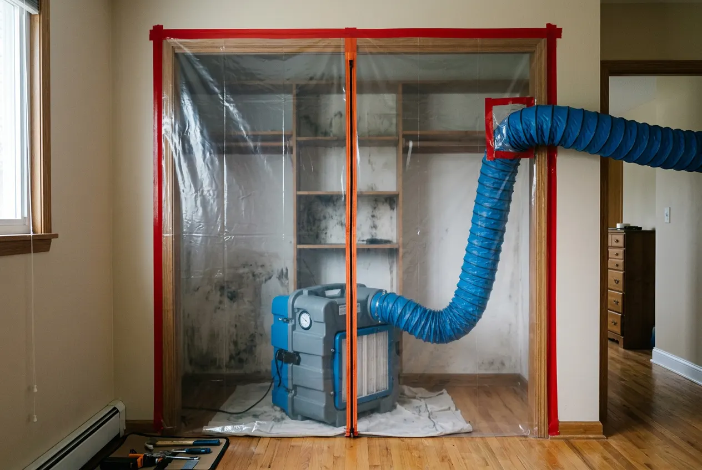

In short
- Mildew is a surface growth you can usually wipe away. Mold that returns, spreads or smells musty usually has a moisture source behind it.
- The EPA says a patch smaller than about 10 square feet (roughly 3 by 3 feet) is usually a DIY job.
- Fix the moisture first. Cleaning without fixing the leak or the humidity just resets the clock.
- Call a pro for larger areas, mold after contaminated water, mold in HVAC, or mold you can smell but can't see.
Every bathroom in the Bay Area grows something eventually. The question is whether it is mildew you can wipe away on a Saturday, or mold that is telling you about a leak you haven't found yet. Here is how to tell, what you can safely handle yourself, and when it is time to call someone.
Mildew vs. mold: how to tell them apart
Mildew is a surface growth. It usually looks:
- Flat and powdery, white, gray or light yellow.
- Concentrated on grout, caulk, window sills and shower curtains.
- Easy to wipe off, and it stays gone for a while once the area is kept dry.
Mold usually looks:
- Fuzzy or slimy, in green, black, brown or dark gray.
- Spotty and spreading, often in patches that grow outward.
- Persistent. It comes back in the same place within days or weeks of cleaning.
The most useful clue isn't color. It's recurrence and smell. Growth that keeps returning to the same spot, or a musty smell in a room where you can't see anything, usually means moisture is feeding it from behind the surface: a slow leak in a wall, a failing shower pan, condensation inside a cold exterior wall, or a bath fan venting into the attic.
The EPA's 10-square-foot rule
The EPA's guidance for homeowners is straightforward: if the moldy area is less than about 10 square feet, roughly a 3-by-3-foot patch, you can usually handle the cleanup yourself.
Bigger than that, and the job changes. Larger areas release more spores when disturbed, usually mean a bigger moisture problem, and often involve materials that have to be removed rather than cleaned.
Safe DIY cleanup for small areas
For small areas on hard surfaces like tile, glass, sealed countertops and painted trim:
- Fix the moisture first. Run the bath fan during showers and for 20 to 30 minutes after, wipe down wet surfaces, and fix any drip you can find. Cleaning without fixing the source just resets the clock.
- Protect yourself. Wear gloves, goggles and an N95 respirator. Keep children, pets and anyone with asthma out of the room.
- Scrub with detergent and water, then dry the surface completely.
- Replace failed caulk and grout if growth has rooted into it. Cleaning won't reach mold that has grown into the material.
- Bag and discard porous items with mold on them, like bath mats, ceiling tiles and cardboard boxes.
Never mix bleach with ammonia or other cleaners. The fumes are toxic.
When to call a pro
Call a professional when:
- The area is larger than about 10 square feet, or you find it in several rooms.
- It followed contaminated water, like a sewage backup or floodwater. That material has to be removed, not cleaned.
- It's in your HVAC system or ductwork, where running the system spreads spores through the house.
- You smell it but can't see it. That usually means it is inside a wall, under a floor or in the attic.
- It keeps coming back after you clean it.
- Someone in the home is sensitive, such as young children, older adults, or anyone with asthma, allergies or a weakened immune system.

IllustrativeWhat professional mold remediation looks like
A real remediation isn't just stronger spray. Done properly, it follows a sequence:
- Find and fix the moisture source. Moisture meters and a thermal camera show where water is getting into the structure.
- Contain the area with plastic sheeting and negative air pressure, so spores stay inside the work area.
- Remove what can't be cleaned, such as moldy drywall, insulation and carpet pad, and bag it inside the containment.
- Clean and HEPA-vacuum the remaining framing and surfaces.
- Dry the structure and confirm it with readings.
- Verify the result. Visual inspection and, where appropriate, clearance testing confirm the work is done before walls are closed up.
Bay Area moisture patterns we see most
- Fog-belt and bayside homes: condensation on cold exterior walls, in closets on north-facing walls, and behind furniture pushed against outside walls.
- Older bathrooms: undersized or missing bath fans, and fans that vent into the attic instead of outside.
- After winter storms: roof and window leaks that wet wall cavities, followed by mold weeks later.
- Crawlspaces: poor ventilation and missing vapor barriers in older homes.
How we handle it
We start with moisture, not mold. A project lead maps where the water is coming from and gives you a written plan and price before any work starts. You get photos and readings throughout, and a clearance report at the end you can keep for insurance or a future sale.
Seeing growth that keeps coming back? Request an inspection and we will find what's feeding it.
Frequently asked questions
Is black mold more dangerous than other mold?
Color doesn't tell you the species or the risk. Any mold growing indoors should be cleaned up and its moisture source fixed. People with allergies, asthma or weakened immune systems are the most sensitive and should stay out of the cleanup.
Can I just use bleach?
Bleach can whiten mold on hard, non-porous surfaces, but it doesn't fix the moisture that feeds mold, and it isn't a substitute for removing moldy porous materials like drywall or carpet. Never mix bleach with ammonia or other cleaners.
Do I need mold testing?
Often not. If you can see mold, the priority is removing it and fixing the moisture. Testing helps when you smell mold but can't find it, when someone in the home has health concerns, or to confirm a remediation is complete.
Does homeowners insurance cover mold?
Many policies only cover mold that results from a covered sudden loss, like a burst pipe, and many cap mold at a low limit. Mold from long-term humidity or a slow leak is commonly excluded. Check your policy for a mold sublimit.
Sources
This article is general information, not legal, insurance or medical advice. Images are illustrative.